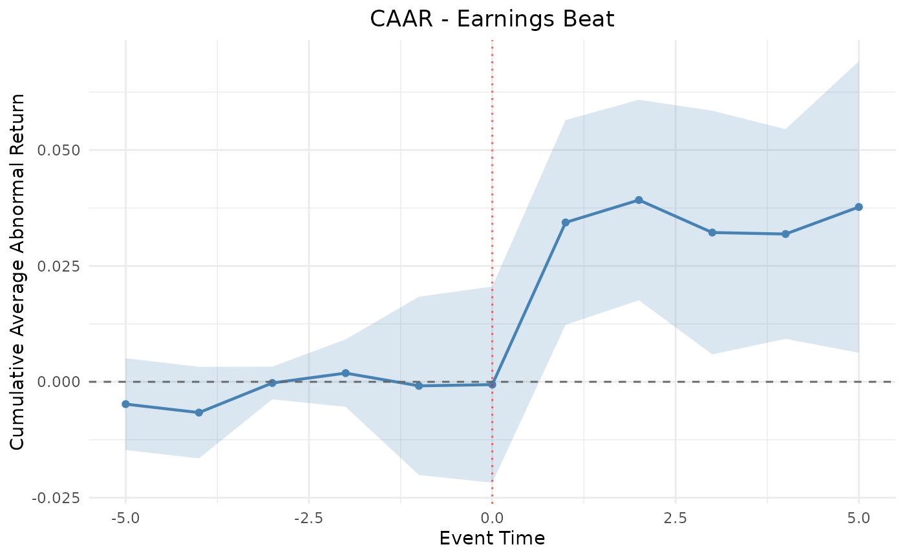

Methods: Test Statistics
Source:vignettes/articles/methods-test-statistics.Rmd
methods-test-statistics.Rmd1. Title & Abstract
This article covers the test statistics EventStudy
uses to decide whether average abnormal returns are significantly
different from zero. It spans the parametric cross-sectional t-test, the standardized-residual tests of
Patell and Boehmer-Musumeci-Poulsen (BMP), the nonparametric sign and
rank tests, and the Kolari-Pynnönen (KP) correction for cross-sectional
correlation. After reading, you will know which test defends against
which failure of the naive t-test, and
you will see all five estimated live on the bundled
earnings_surprises multi-event panel.
2. When to Use This Method
- Cross-sectional t-test (CSectT) — default; assumes independent, homoskedastic abnormal returns across firms.
- Patell Z — standardizes each abnormal return by its own forecast-error-corrected estimation-window standard deviation, so noisy firms do not dominate.
- BMP t — like Patell but robust to event-induced variance (volatility that rises because of the event).
- Sign / rank tests — nonparametric; robust to non-normal, fat-tailed abnormal returns.
- Kolari-Pynnönen — corrects BMP for cross-sectional correlation of abnormal returns (e.g. same-industry, same-day events).
3. Intuition
Averaging abnormal returns across firms cancels idiosyncratic noise, leaving the event effect. The tests differ in how they weight and standardize that average: equally (CSectT), by each firm’s own precision (Patell/BMP), by rank or sign (nonparametric), or after netting out the correlation that inflates the naive standard error (KP).
4. Model & Null Hypothesis
The cross-sectional t on the average abnormal return \overline{AR} over N firms:
t = \sqrt{N}\,\frac{\overline{AR}}{s_{AR}}.
Patell Z standardizes each abnormal return by its forecast-error-corrected sigma into a standardized abnormal return SAR_i, then aggregates:
Z = \frac{\sum_i SAR_i}{\sqrt{\sum_i Q_i}}, \qquad Q_i = \frac{m_i - k}{m_i - k - 2},
with m_i estimation-window length and k parameters. BMP replaces the denominator with the cross-sectional standard deviation of the SAR_i, absorbing event-induced variance:
t_{BMP} = \sqrt{N}\,\frac{\overline{SAR}}{s_{SAR}}.
The KP adjustment scales t_{BMP} by the average off-diagonal SAR correlation \bar r:
t_{KP} = t_{BMP}\,\sqrt{\frac{1 - \bar r}{1 + (N-1)\,\bar r}}.
The sign test counts positive abnormal returns w against the null of a fair coin: z = (w - 0.5N)/(0.5\sqrt{N}) (Corrado 1989).
The null hypothesis throughout is H_0: \mathbb{E}[\overline{AR}] = 0 — no average abnormal performance.
5. Assumptions
- CSectT: cross-sectionally independent, homoskedastic abnormal returns.
- Patell: correct estimation-window sigma; independence across firms.
- BMP: relaxes homoskedasticity (handles event-induced variance).
- KP: relaxes cross-sectional independence via the correlation correction.
- Sign/rank: exchangeability under H_0; no normality required.
6. Worked Example
earnings_surprises is a 3-firm multi-event panel (AAPL /
MSFT / GOOGL), which yields average abnormal returns (AAR) and their
cumulative counterpart (CAAR). Test statistics are composed as
R6 objects and passed into
MultiEventStatisticsSet$new().
library(EventStudy)
data("earnings_surprises")
task <- EventStudyTask$new(
firm_stock_data_tbl = earnings_surprises$firm,
reference_tbl = earnings_surprises$index,
request_tbl = earnings_surprises$request
)
multi <- MultiEventStatisticsSet$new(tests = list(
CSectTTest$new(), PatellZTest$new(), BMPTest$new(),
SignTest$new(), KolariPynnonenTest$new()
))
params <- ParameterSet$new(multi_event_statistics = multi)
task <- prepare_event_study(task, params)
task <- fit_model(task, params)
task <- calculate_statistics(task, params)Single-event AR/CAR t-tests are
available from the default SingleEventStatisticsSet$new()
(ARTTest, CARTTest). The family also includes
GeneralizedSignTest, the Corrado RankTest, and
the CalendarTimePortfolioTest for long-horizon
calendar-time inference.
7. Rendered Table
knitr::kable(
tidy.EventStudyTask(task, type = "aar"),
caption = "AAR / CAAR with cross-sectional t, plus companion Patell/BMP/Sign/KP statistics."
)| group | term | estimate | std.error | statistic | p.value | caar | caar_statistic | caar_p.value |
|---|---|---|---|---|---|---|---|---|
| Earnings Beat | -5 | -0.0048 | 0.0051 | -0.9518 | 0.4416 | -0.0048 | -0.9518 | 0.4416 |
| Earnings Beat | -4 | -0.0018 | 0.0011 | -1.6375 | 0.2432 | -0.0066 | -1.3184 | 0.3181 |
| Earnings Beat | -3 | 0.0064 | 0.0068 | 0.9463 | 0.4439 | -0.0003 | -0.1398 | 0.9016 |
| Earnings Beat | -2 | 0.0021 | 0.0033 | 0.6547 | 0.5799 | 0.0019 | 0.5058 | 0.6633 |
| Earnings Beat | -1 | -0.0027 | 0.0063 | -0.4380 | 0.7041 | -0.0009 | -0.0886 | 0.9375 |
| Earnings Beat | 0 | 0.0003 | 0.0016 | 0.1690 | 0.8813 | -0.0006 | -0.0560 | 0.9604 |
| Earnings Beat | 1 | 0.0350 | 0.0218 | 1.6018 | 0.2504 | 0.0344 | 3.0528 | 0.0926 |
| Earnings Beat | 2 | 0.0048 | 0.0033 | 1.4529 | 0.2834 | 0.0392 | 3.5533 | 0.0709 |
| Earnings Beat | 3 | -0.0070 | 0.0033 | -2.1545 | 0.1640 | 0.0322 | 2.4026 | 0.1382 |
| Earnings Beat | 4 | -0.0003 | 0.0027 | -0.1177 | 0.9171 | 0.0319 | 2.7628 | 0.1098 |
| Earnings Beat | 5 | 0.0058 | 0.0046 | 1.2728 | 0.3310 | 0.0377 | 2.3509 | 0.1431 |
8. Rendered Plot
plot_event_study(task, type = "caar")
Cumulative average abnormal return (CAAR) across the event window.
9. Interpretation
Each row of §7 reports the AAR at an event-time offset with its cross-sectional t; the CAAR column accumulates them. When the standardized tests (Patell, BMP, KP) diverge from the plain CSectT, that divergence is diagnostic: a large gap between BMP and CSectT points to event-induced variance, while a large KP-vs-BMP gap points to cross-sectional correlation. A significant CAAR that survives KP is the most defensible evidence of an event effect. The plot in §8 shows the CAAR path — a persistent post-event drift is the visual counterpart of a significant cumulative statistic.